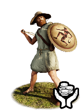
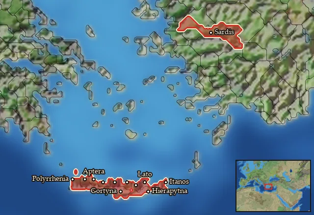

RTR: Imperium Surrectum
RTR: Imperium SurrectumMercenary Cretan Slingers


Mercenary. Hired from a regional pool, not recruited from a building.
Class: missile · Category: infantry · Men per unit: 40
Description
Crete, one of the biggest suppliers of mercenaries for the various powers of the Mediterranean world, was not just home to the most famous archers of the Classical and Hellenistic period, but could also provide excellent slingers to all in need of their service. Having been raised on an island that saw constant interstate warfare between dozens of poleis, fighting on hilly and rugged ground, these slingers were trained from childhood to raid and skirmish with all kinds of light weaponry. Armed for these purposes, these Cretans carried a sling made from leather, hemp, or braided flax. They could shoot small lead bullets or stones that were inscribed with the names of their commanders, their poleis, or insults directed at their enemies. A small round bronze shield, the pelte, protects them in combat (Head, Armies of the Macedonian and Punic Wars (2012), p. 208), along with a dagger as a backup weapon. Most of them wear petasos hats, but a few are able to afford extra armour like pilos helmets and linothorakes. Due to their expertise with the sling and their slight armour advantage over most Greek light infantry, they will fare exceptionally well in battle against other skirmishers, but they should seek to avoid close combat with either heavy infantry or cavalry at all cost.
Historical background
‘‘Crete, as a whole, is not a level country, like Thessaly: consequently, whereas the Thessalians mostly go on horseback, we Cretans are runners, since this land of ours is rugged and more suitable for the practice of foot-running. Under these conditions we are obliged to have light armour for running and to avoid heavy equipment; so bows and arrows are adopted as suitable because of their lightness. Thus, all these customs of ours are adapted for war" (Klinias, in: Plato’s Laws 625c-d).
This description of Crete and its inhabitants summarizes the circumstances that made it the prime hub for acquiring light-infantry mercenaries during the Classical and Hellenistic periods. The rugged topography of Crete was suited for people who could move nimbly over the hills and impassable terrain like goat-herders and their flocks, as well as lightly armed and armoured infantry. The island was home to a high density of poleis, around 50 to 60 of them, built on hills due to the constant warfare among each other (Kelly, The Cretan Slinger at War (2012), pp. 2-4). Polybios (IV, 8, 11), mainly showing his disdain for the Cretans (comparing their cowardice to the bravery of the Achaians and Macedonians), underhandedly portrays their aptitude in light-infantry-combat, when he describes them as "irresistible in ambuscades”, being experts in trickery, raiding, and fraud.
Though Cretans were mainly known as archers, they are also attested as mercenary slingers in several sources. In Crete, citizenship was often connected to military service, meaning every Cretan polis had its own army. Profit gained from plunder and mercenary service that could be paid into the treasury of the own polis, as well as participation in high-profile rituals like the andreia in Hellenistic cities, led to social encouragement of soldiering among Cretans (Kelly (2012), pp. 13-14). As slingers they served in the army of the Seleucids at Magnesia in 190 BC (Liv. XXXVII, 41, 9; 11), for the Romans in Gnaeus Manlius Vulso’s campaign against Galatia a year later (Liv. XXXVIII, 20-21), and among Pompey’s army during the Civil War (App. Bell. Civ. II, 71, 1). Several inscribed bullets also confirm the use of the sling on Crete itself of course, having been found in Knossos, Gortyna, Aptera, Prinias Patela, Kydonia, and many other former poleis, and even on neighbouring islands, making their attestation much more numerous than Cretan arrowheads (Kelly (2012), p. 4).
The writing on bullets served various functions. Most Cretan bullets were inscribed with names referring to their commanders or ethnic divisions, an important part of identifying with their own Cretan unit, a sort of expression of "self-cohesion" while serving in a foreign army. This group identity was further expressed through polis-associated symbols, like bovine heads on Gortynian bullets (Kelly (2012), p. 10; 13). Much less attested than in other areas of the Mediterranean, though still present are insults or ironic messages, like δεξαι (dexai – "receive this”), λαβε (labe – "take this”), σου (sou – "all yours”), or παπαι (papai – "ouch”) (Kelly (2012), pp. 19-20).
The best use of slingers was against lightly armoured enemies. One section in Livy’s account of the Roman campaign against Galatia (XXXVIII, 21, 11) vividly describes the effect sling bullets could have on unarmoured fighters. The bullets could bury themselves deep into the body, and even when they did not look as if they caused a bad wound from the outside, they were both very hard to get out and incredibly fatal. For this reason, they could hold horses at a distance, as Nikias planned to do when recruiting various skirmishers for his Sicilian expedition (Thuk. VI, 22; 25, 2), or even other skirmishers, like the Rhodian slingers on the march of the Ten Thousand (Xen. Anab. 3.4.16).
Stats
| Rank in roster | Rank in roster | Rank in roster | Rank in roster | ||||||||
|---|---|---|---|---|---|---|---|---|---|---|---|
| Men per unit | 40 | ███······· 31% | Attack | 5 | █········· 0% | Charge bonus | 1 | █········· 4% | Defence | 15 | █········· 8% |
| · armour | 2 | █········· 13% | · defence skill | 11 | █········· 6% | · shield | 2 | ███······· 26% | Morale | 7 | █········· 11% |
| Discipline | Low | Training | Untrained | Upkeep per turn | 448 dn | ██········ 17% |
Weapons
| Primary | Secondary | Primary | Secondary | Primary | Secondary | Primary | Secondary | ||||
|---|---|---|---|---|---|---|---|---|---|---|---|
| Attack | 5 | 3 | Charge bonus | 1 | 1 | Type | missile · archery | melee · simple | Damage | blunt | piercing |
| Projectile | stone | — | Range | 160 | — | Ammunition | 25 | — | Properties | Armour-piercing (counts only half the target's armour) | — |
Defence
| Primary | Secondary | Primary | Secondary | Primary | Secondary | Primary | Secondary | ||||
|---|---|---|---|---|---|---|---|---|---|---|---|
| Total | 15 | — | Armour | 2 | — | Defence skill | 11 | — | Shield | 2 | — |
Condition and terrain
| Hit points | 1 | Ground: scrub / sand / forest / snow | 0 / 0 / 0 / 0 | Charge distance | 30 | Formations | Square |
Technical stats
| Time between blows (primary / secondary) | 2.5 s / 2.5 s | Extra fatigue in hot climates | 0 | Collision mass per man (1.0 is normal) | 0.87 | Spacing between men: close / loose | 1.2 × 2.8 m / 2.16 × 5.04 m |
| Default ranks | 5 |
In battle: Very good stamina
Where to hire it
Mercenaries are hired from a regional pool, not recruited from a building. This unit is offered by 2 pools covering 12 regions, at 3,860–4,323 dn to hire and 0–1 experience.

At least one of those pools sells to any faction that has an army in range, with no faction restriction.
Some pools additionally restrict it to Seleucid Empire · Seleucid Rebels (Asia Minor) · Seleucid Rebels (Upper Satrapies).